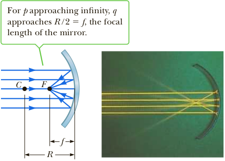

Concave mirrors
A spherical mirror, as its name implies, has the shape of a segment of a sphere. Figure 1 shows a spherical mirror with a silvered inner, concave surface; this type of mirror is called a concave mirror. A ray from O reflects from the mirror at P and travels through I. The location marked C is the centre of curvature of the mirror, φ = α + θi, β = α + θi + θt, and θi = θt<./p>
As for the case of the convex mirro using the paraxial approximation, we can substitute the tangents/sines for the angles labelled α, β and φ, and assume d ≈ 0, to get for the concave case
1/a + 1/b = 2/R
Now consider a point source of light placed at point O in Figure 2, on the principal axis and outside point C. Several diverging rays originating at O are shown. After reflecting from the mirror, these rays converge to meet at I, called the image point. The rays then continue and diverge from I as if there were an object there. As a result, a real image is formed. Whenever reflected light actually passes through a point, the image formed there is real. We often assume all rays that diverge from the object make small angles with the principal axis. All such rays reflect through the image point, as in Figure 2.
Rays that make a large angle with the principal axis, as in Figure 3, converge to other points on the principal axis, producing a blurred image. This effect, called spherical aberration, is present to some extent with any spherical mirror and is discussed in Section 23.6.
We can use the geometry shown in Figure 4 to calculate the image distance q from the object distance p and radius of curvature R. By convention, these distances are measured from point V. The figure shows two rays of light leaving the tip of the object. One ray passes through the center of curvature, C, of the mirror, hitting the mirror head-on (perpendicular to the mirror surface) and reflecting back on itself. The second ray strikes the mirror at point V and reflects as shown, obeying the law of reflection. The image of the tip of the arrow is at the point where the two rays intersect. From the largest triangle in Figure 4, we see that tan θ = h/p; the light blue triangle gives tan θ = −h'/q. The negative sign has been introduced to satisfy our convention that h9 is negative when the image is inverted with respect to the object, as it is here. From Equation 23.1 and these results, we find that the magnification of the mirror is
M = h'/ h = q / p
From two other triangles in the figure, we get
tan θ = −h/(p − R) and tan θ = −h'/(R − q)
from which we find that
h'/ h = −(R − q) / (p − R)
comparing the last two equations we see that
−(R − q) / (p − R) = q/p
Simple algebra reduces this equation to
1/p + 1/q = 2/R
This expression is called the mirror equation.
If the object is very far from the mirror—if the object distance p is great enough compared with R that p can be said to approach infinity—then 1/p ≈ 0, and we see from Equation 23.4 that q ≈ R/2. In other words, when the object is very far from the mirror, the image point is halfway between the center of curvature and the center of the mirror, as in Figure 23.10a. The incoming rays are essentially parallel in that figure because the source is assumed to be very far from the mirror. In this special case, we call the image point the focal point F and the image distance the focal length f, where
f = R/2
The mirror equation can therefore be expressed in terms of the focal length:
1/p + 1/q = 1/f
Note that rays from objects at infinity are always focused at the focal point.
Remark: The focal point is not the point at which light rays focus to form an image. The focal point of a mirror is determined solely by its curvature; it doesn’t depend on the location of any object.
